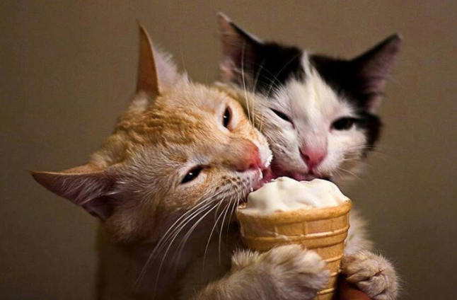
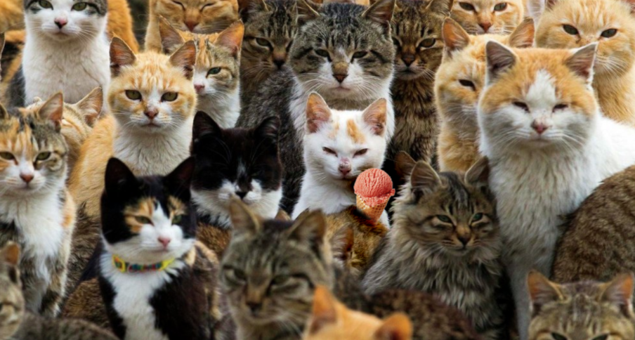
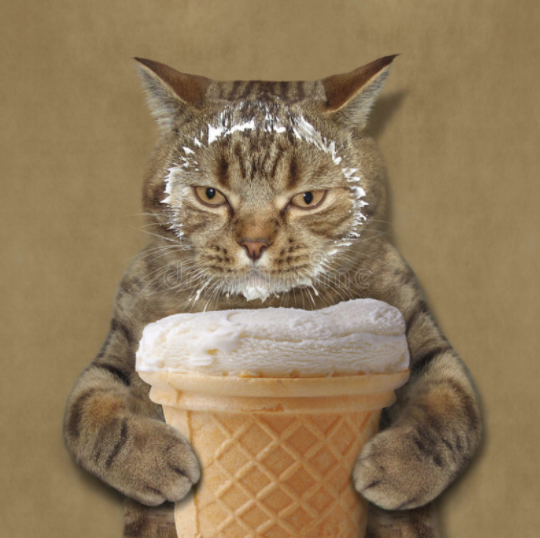
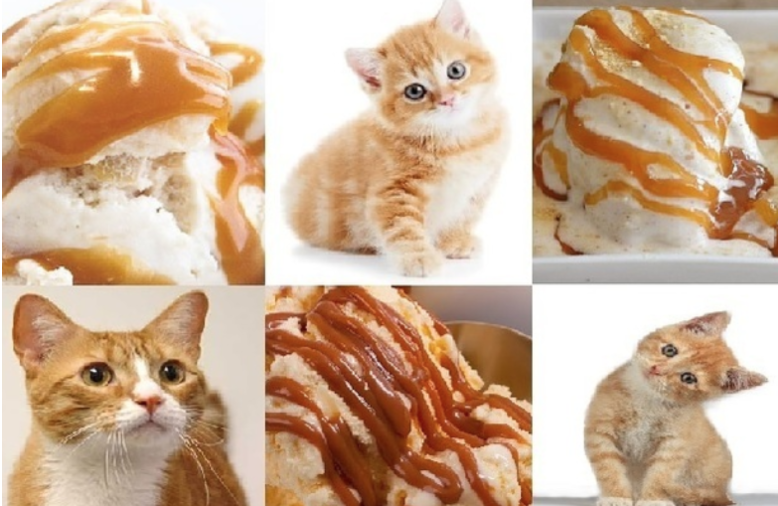
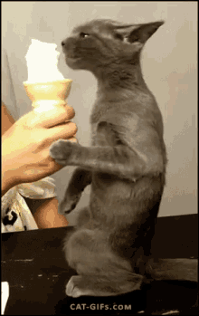

5 behavior change strategies to make cats eat more ice cream
Posted on April 1, 2018 by Mia Suh and Lucas Colusso
1. CAT-countability
Eating ice cream with a buddy will make you eat more ice cream!
2. Public cat-mmitment
Let others know the cat is eating an icecream! According to public commitment theory, one is more likely to stick to the plans when the plans are publicly known! People want to present themselves consistent with what they publicly say!
3. Paw in the Door Technique
If a cat hates to taste an ice cream, just ask it to hold the cone for a sec first. According to the Foot in the Door Technique, people are willing to help someone they have already help.
4. Self-CAT-egorization theory
Self-categorization theory is a social psychological theory that describes the circumstances under which a person will perceive collections of people (including themselves) as a group, as well as the consequences of perceiving people in group terms. According to self-categorization theory, as social identities become salient, and depersonalization and self-stereotyping occurs, people adopt the norms, beliefs, and behaviors of fellow ingroup members. They also distance themselves from the norms, beliefs, and behaviors of comparison outgroup members.
5. Increasing self-effi-cat-sy
Bandura writes that even when individuals have a strong sense of efficacy they may not perform the behavior if they have no incentive. This seems to suggest that if we are interested in getting others to enact behavior change it may be important to provide incentives and rewards for the behaviors.